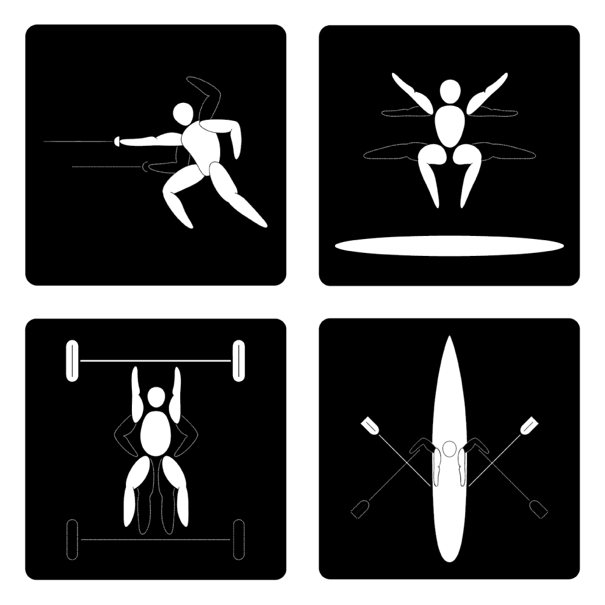
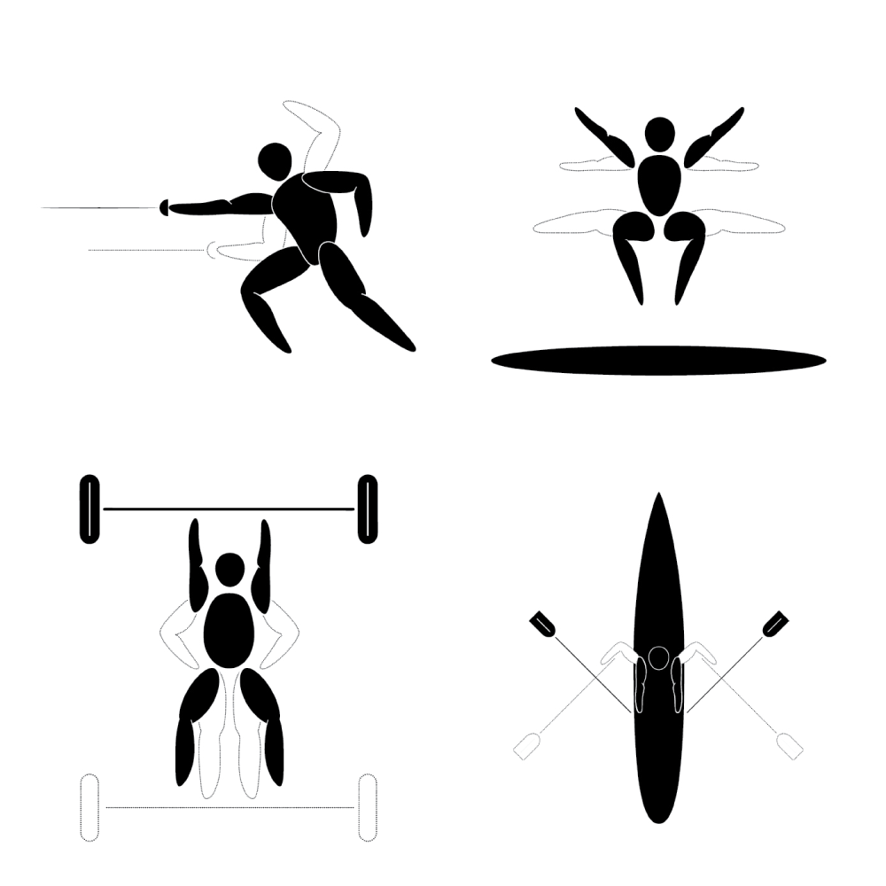

BRANDING
OLYMPIC PICTOGRAMS
OVERVIEW
When I was kid and on the swim team, I thought for sure the olympics were in my future. I was fast. Real fast. However, even though I was good in my town, it didn’t mean I was the best in the state or the country. I learned that the hard way, and lessons like that are tough but important when you’re a kid. What am I getting at? What does this have to do with design? Well, I was lucky enough to have closure with my swimming abilities by designing 4 new pictograms for the olympics. I chose sports that have always interested and fascinated me and left out swimming for obvious reasons.
THE POWER OF MOTION
I thought to myself, “how cool would it be to have two pictograms in one by showing the body at rest and the body at motion. From what I can tell, it hadn’t ever been done in an olympic pictogram.
THE ARBITRARY COLORS
OF MOTION AND REST
Ah, the ol’ black and white. The kings (or queens) of contrast. White is for “rest” and black is for “motion.” OR black is for “rest” and white is for “motion.” How does YOUR brain interpret it?
SOFTWARE
- Adobe Illustrator